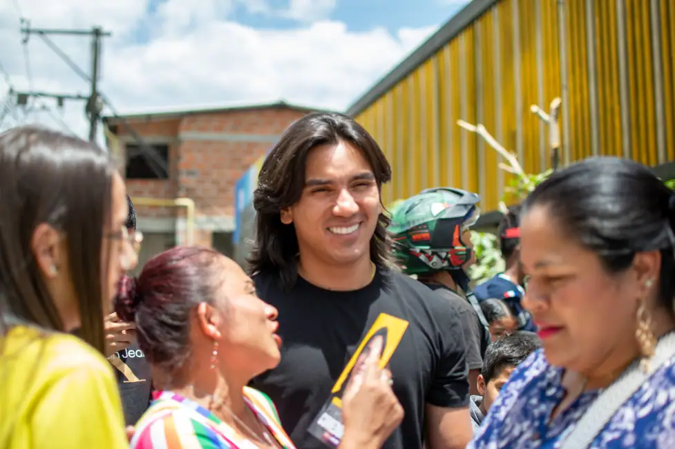

Restaurar
Medellín es la casa de todos y todas: Es hora de restaurar nuestra casa. Medellín es una ciudad en la que todas y todos tienen las mismas oportunidades de desarrollar nuestros proyectos de vida.

Medellín es la casa de todos y todas: Es hora de restaurar nuestra casa. Medellín es una ciudad en la que todas y todos tienen las mismas oportunidades de desarrollar nuestros proyectos de vida.
Construir sobre lo construido: Medellín tiene bases solidas; es hora de potenciar la infraestructura y las capacidades productivas que hoy nos hacen referentes en Colombia y la región.
+ Medellín + Empresa + Empleo: Crear los ecosistemas industriales y tecnológicos que impulsarán la Medellín Industrial, segura e innovadora.

Empresario paisa que ha construido su vida profesional y familiar en Medellín; por esto nuestra propuesta esta en los barrios y con la gente.
 Los ciudadanos de Medellín cuentan con mi experiencia en el sector
privado y en educación para construir un mejor presente.
Los ciudadanos de Medellín cuentan con mi experiencia en el sector
privado y en educación para construir un mejor presente.
Medellín lo es todo y es nuestro fin; para nosotros no es un trampolín político.
 Tenemos un proyecto de ciudad ambicioso para el presente y el futuro
de la ciudad: Medellín capital empresarial y tecnológica de Colombia.
Tenemos un proyecto de ciudad ambicioso para el presente y el futuro
de la ciudad: Medellín capital empresarial y tecnológica de Colombia.
 Nuestra forma de hacer política consiste en plantear argumentos, ideas y propuestas; cero corrupción, mentiras y política tóxica.